Cuatro artistas, cuatro formas de entender la música.
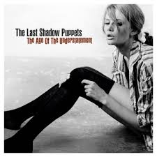
Mi album favoritoFormación: 2007
Integrantes: Alex Turner y Miles Kane.
Género: Baroque pop, indie rock.
Proyecto musical que combina guitarras, arreglos orquestales y una marcada estética cinematográfica.
Me gusta su elegancia, sus arreglos y esa sensación de estar escuchando la banda sonora de una película que todavía no existe.
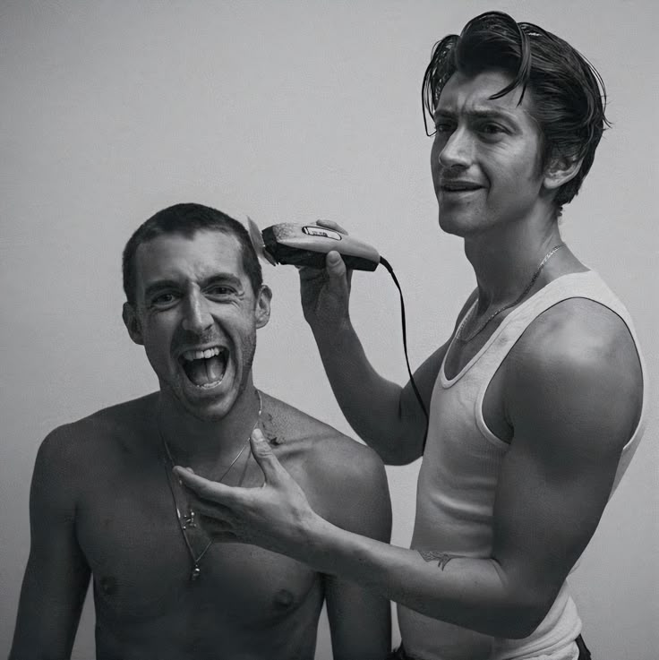
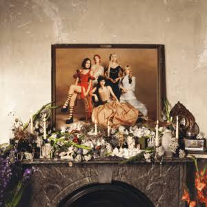
ALBUM SELECCIONADOFormación: 2020
Integrantes: Abigail Morris, Lizzie Mayland, Emily Roberts, Georgia Davies y Aurora Nishevci.
Género: Art rock, baroque pop.
Banda londinense reconocida por su sonido teatral, sus influencias clásicas y sus presentaciones llenas de personalidad.
Su teatralidad y la manera en que convierten cada canción en una pequeña puesta en escena.
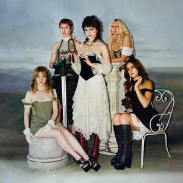
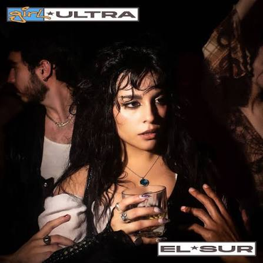
ALBUM SELECCIONADOProyecto iniciado: 2016
Artista: Mariana de Miguel.
Género: Alternative R&B, soul.
Proyecto mexicano que explora sonidos contemporáneos del R&B, mezclando influencias electrónicas y sensibilidad pop.
Me atraen sus atmósferas, su voz y esa mezcla de intimidad y modernidad.
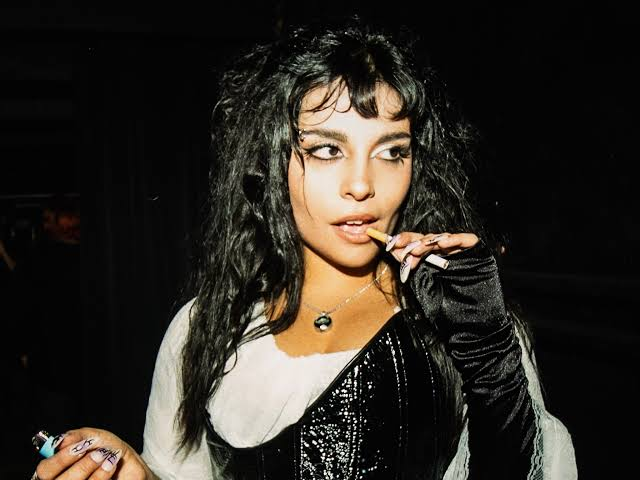
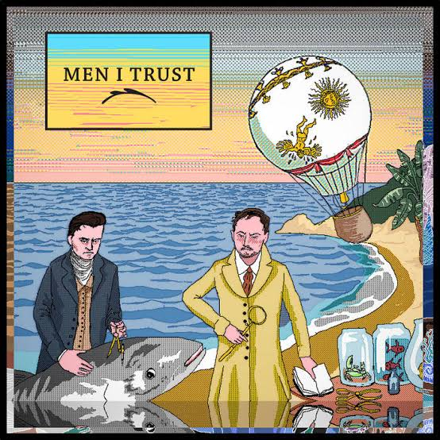
ALBUM SELECCIONADOFormación: 2014
Integrantes: Emma Proulx, Jessy Caron y Dragos Chiriac.
Género: Indie pop, dream pop.
Trío canadiense conocido por sus melodías relajadas, líneas de bajo envolventes y una producción delicada.
Su música tiene algo tranquilo y acogedor; es perfecta para perderse un rato en los sonidos.
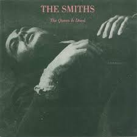
ALBUM SELECCIONADOFormación: 1982
Integrantes: Morrissey, Johnny Marr, Andy Rourke y Mike Joyce..
Género: Indie pop, Jangle rock, new wave.
Banda británica que destacó por sus guitarras melódicas, letras introspectivas y una identidad musical inconfundible.
Amoo las guitarras de Marr, sus letras y esa combinación de ironía, melancolía y elegancia.
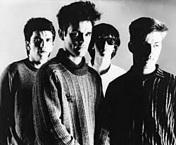
Proyecto iniciado: 2012
Artista: Mac DeMarco.
Género: Indie rock, jangle pop, slacker rock.
Cantautor canadiense conocido por sus guitarras relajadas, sonidos cálidos y una personalidad musical despreocupada.
Su música tiene una tranquilidad especial, como una tarde sin planes y sin demasiadas preocupaciones.
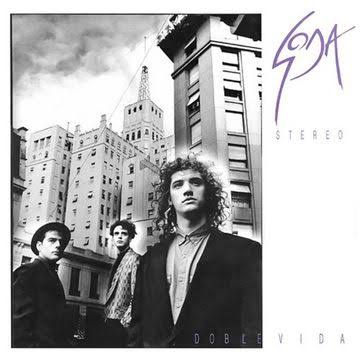
ALBUM SELECCIONADOFormación: 1982
Integrantes: Gustavo Cerati, Zeta Bosio y Charly Alberti.
Género: Rock en español, new wave, alternative rock.
Una de las bandas más influyentes del rock latinoamericano, reconocida por su evolución sonora y su identidad visual y musical.
Me encanta su sonido, la sensibilidad de sus letras y la manera en que Cerati construía atmósferas con su guitarra.
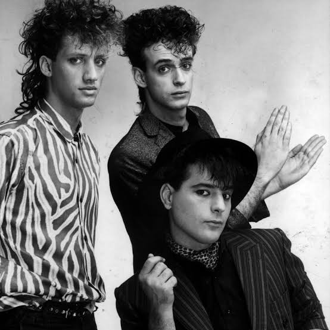